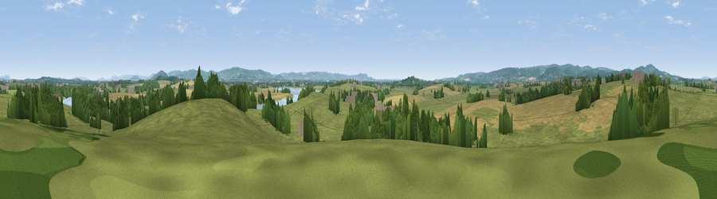

Viewpoint near Bollow
#18671 in England · top 36% of its area beats it · near Bollow · path 203 mWhere it is
The exact computed spot (SO 74725 13525). Click the marker for map links.
Public access: the nearest public right of way is about 203 m away — the final stretch may cross private land. Computed from Natural England's CRoW access layer and OpenStreetMap rights of way — not the legal definitive map. Always verify locally.
The view, rendered

A 360° render of this exact spot computed from the terrain model, tree cover and land cover — summer colours, afternoon light, calibrated against photographs of famous viewpoints. Real trees, hedges and buildings will differ in detail.
The panorama
Grey silhouette: terrain skyline in each direction (720 bearings, Earth curvature and refraction included). Dashed green: skyline with trees (+15 m) and buildings (+8 m) as obstacles. Blue strip: how far the ground is visible on each bearing.
Where the view opens
Wedge length = distance to the farthest visible ground on that bearing (vegetation-aware). Rings at 10, 25 and 50 km.
What fills the view
59% grassland · 26% cropland · 13% woodland · 1% built-up · 1% water
Angular shares of the visible panorama (visual magnitude), not map area. Landscape diversity 0.45 (0–1 Shannon).
Key numbers
More beautiful places nearby
The staircase of upgrades: each row has a higher view potential than everything closer. Driving times are estimates from straight-line distance, calibrated against real road routing — check an actual route before setting out.
| Place | Direction | Drive | Score |
|---|---|---|---|
| Viewpoint near Westbury-on-Severn | W · 3 km | ~8 min | 55.9 |
| Barrow Hill | SSW · 4 km | ~9 min | 65.7 |
| Nottwood Hill | NW · 6 km | ~13 min | 69.4 |
| Viewpoint near Huntley | NW · 7 km | ~14 min | 75.0 |
| Haresfield Beacon | ESE · 9 km | ~17 min | 75.7 |
| Viewpoint near May Hill | NW · 9 km | ~18 min | 76.1 |
| Viewpoint near Whaddon | E · 9 km | ~18 min | 77.7 |
| Viewpoint near Brookthorpe | E · 11 km | ~21 min | 78.0 |
51.81977, -2.36809 · source: screening · position refined by local search. Computed location — check access rights before visiting.